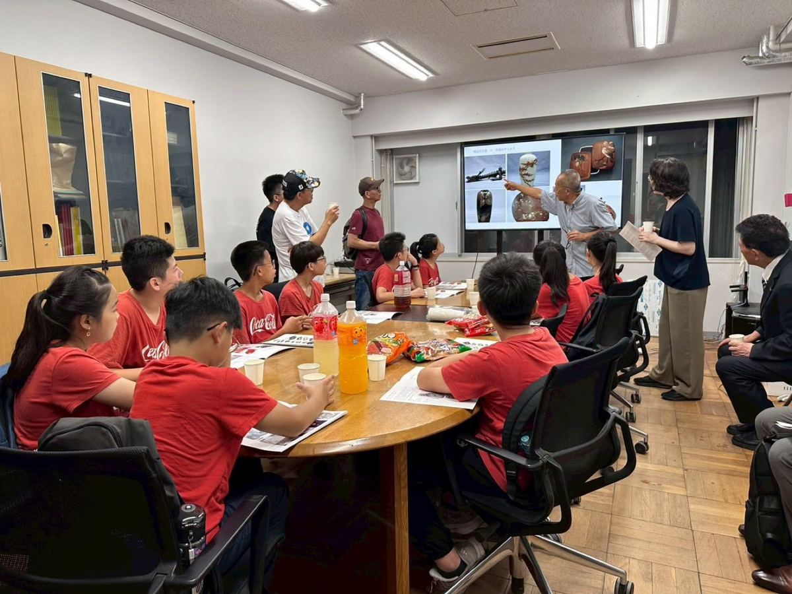
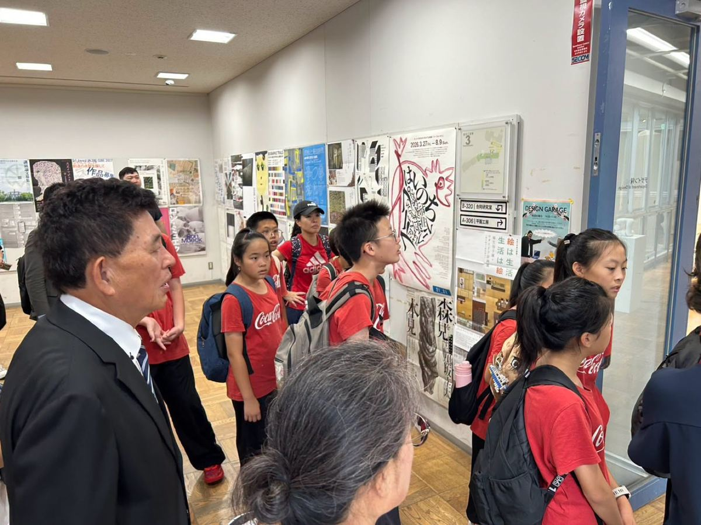
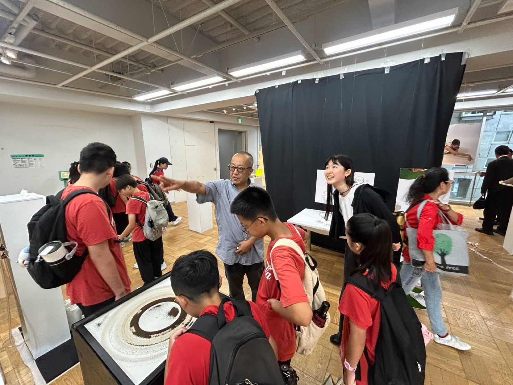
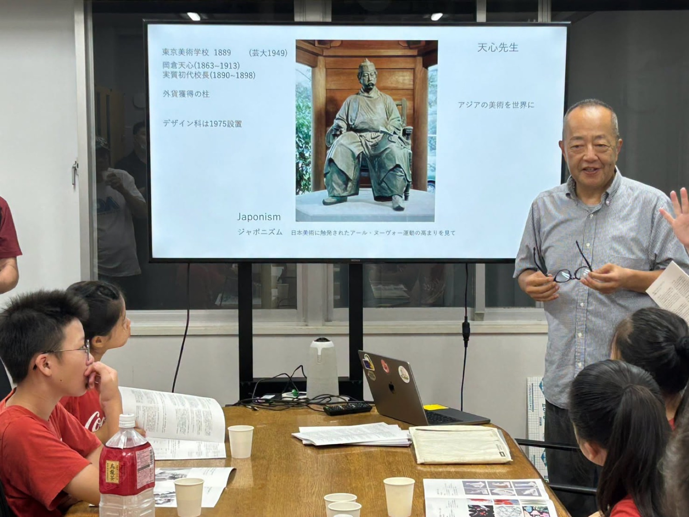
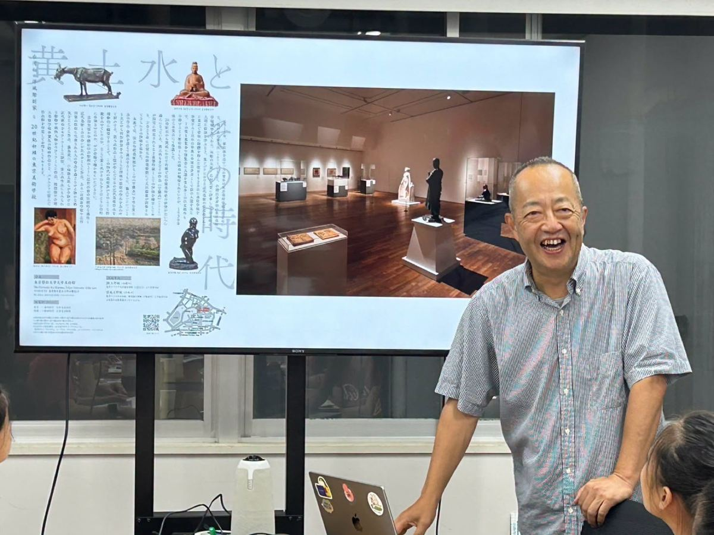

Today, teachers and students from Lushang Elementary walked through Tokyo's lush, green Ueno Park to reach the highest hall of Japanese art education — Tokyo University of the Arts — for a deep learning journey filled with art and culture.
Tokyo University of the Arts has a history of more than 130 years and is Japan's most representative national art university, having nurtured countless artists, designers, and musicians who are active on the world stage.
Special thanks go to Professor Nagahama Masahiko, who personally introduced the children to the university's history, campus environment, and the distinctive features of its Fine Arts department, and led everyone on a tour of exhibited works. From artistic creation to design thinking, the children experienced up close the creativity and passion of artists, and came to understand that art is not only about technique, but also a way of observing the world and expressing oneself.
Walking through a campus steeped in history, the children listened attentively, examined each work of art closely, and bravely voiced their own thoughts and questions. Art was no longer just knowledge from a textbook — through firsthand experience, a seed of aesthetic sense and creativity was planted in their hearts.
The value of education is not only to see the world, but to make the world the children's classroom.
We believe today's visit to Tokyo University of the Arts will become one of the children's most treasured memories, adding even more possibility to their future dreams.
Heartfelt thanks to Professor Nagahama Masahiko for his warm welcome and wonderful guided tour, giving Lushang Elementary's children a day full of rewards — learning through art, and growing through exchange.




今天，路上國小師生步行穿越綠意盎然的東京上野公園，來到日本藝術教育最高殿堂──東京藝術大學，展開一場充滿藝術與文化的深度學習之旅。
東京藝術大學迄今已有一百三十多年歷史，是日本最具代表性的國立藝術大學，培育了無數活躍於世界舞臺的藝術家、設計師與音樂家。
此次特別感謝長濱雅彥教授親自為孩子們介紹東京藝術大學的歷史、校園環境及美術學部特色，並帶領大家參觀展覽作品。從藝術創作到設計思維，孩子們近距離感受藝術家的創意與熱情，也體會到藝術不只是技巧，更是一種觀察世界、表達自我的能力。
走在充滿歷史氣息的校園中，孩子們認真聆聽講解、細細欣賞每件作品，也勇敢提出自己的想法與問題。藝術不再只是課本上的知識，而是透過親身體驗，在心中種下一顆美感與創新的種子。
教育的價值，不只是看見世界，更是讓世界成為孩子們的教室。
相信今天的東京藝術大學之旅，將成為孩子們珍貴的回憶，也為未來的夢想增添更多可能。
衷心感謝長濱雅彥教授熱情接待與精彩導覽，讓路上國小的孩子們收穫滿滿，在藝術中學習，在交流中成長。
Tap 🔊 to listen · 點喇叭聽發音
The visit planted a seed of aesthetic sense in the children's hearts.這趟參訪在孩子們心中種下了美感的種子。
The professor led the students to see each exhibit in the gallery.教授帶領學生欣賞美術館裡的每件展覽作品。
Students felt the artists' creativity and passion up close.學生們近距離感受到藝術家的創意與熱情。
They walked through a gallery full of student artwork.他們走過一間擺滿學生作品的美術館。
A bronze sculpture stood at the entrance of the park.一座青銅雕塑立在公園入口。
Professor Nagahama gave the students a wonderful guided tour.長濱教授為學生們做了精彩的導覽。
The university campus is full of history and art.這所大學的校園充滿了歷史與藝術氣息。
The exhibits inspire students to think like artists.這些展覽作品啟發學生像藝術家一樣思考。
Students learned about the university's design department.學生們認識了這所大學的設計學部。
Match the word to its meaning
把英文和中文配對
Matched 配對成功：0 / 9